Towards a Densing Law for User Representation Learning at Billion-Scale Capacity / 面向十亿级容量用户表示学习的行为稠密化定律
这篇论文由蚂蚁集团 DeepFind Team 的 Bin Dou 等人与浙江大学合作完成，于 2026 年 8 月 24 日公开，唯一论文入口为 arXiv:2608.23392。作者先用支付宝真实行为数据诊断“原始行为扩展墙”，再把用户行为转为 RQ-VAE 语义 ID，以效用—成本 Pareto 前沿定义“最小充分分词容量”，并拟合数据规模与容量的对数—对数关系。最后，论文提出 Adaptive Length Gated Network（ALGN），根据残差与量化不确定性为不同行为片段分配可变残差层数。本轮未核验到作者独立官方代码仓库，因此可复现性判断以 PDF 中的公开描述为限。
真实工业用户建模通常同时扩大用户数、行为时间窗口和模型参数，但十亿级原始行为中的重复与低信息事件会让下游收益迅速饱和；已有分词方法又缺少“数据变大时，最少需要多大表示容量”的定量选型规则。
1. 背景和问题
工业平台上的通用用户表示会同时服务分类、文本检索式人群定向和 U2U 检索。论文的参考系统先把多源行为按天组织，用过去时段预测未来时段的文本表达：Transformer 编码过去行为，LoRA 微调的 Qwen3-Embedding 类模型编码未来行为模板，两者以 InfoNCE 对齐。预训练统计覆盖 1 亿到 20 亿用户、30到270天序列、0.05B到0.4B参数，每个用户约 2200 个行为文本 token。下游不是单一数据集：分类对 50 个场景求平均，文本检索与 U2U 检索各覆盖 22 个场景，每个场景约 50 万用户。
作者把问题拆成三个递进问题。RQ1 先问原始行为的用户数和时间窗口是否能持续换来下游收益；RQ2 在分词确实缓解饱和后，追问某一数据规模需要多大的最小充分容量；RQ3 再追问同一个全局配置是否应当平均分给每个用户片段。它们对应三个层次：先证明扩展瓶颈，再校准全局容量，最后做样本级分配。
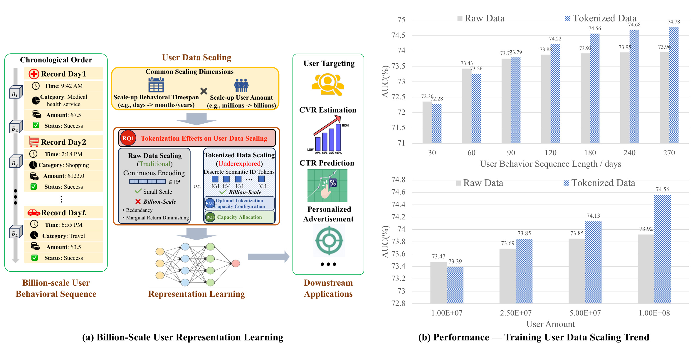
Figure 1 左侧从账单类行为日志出发，把扩大用户量、延长历史、原始连续编码、离散语义 ID 与下游应用放在同一条链路上；右侧两组 AUC 曲线则提前显示分歧。时间窗口从 30 天延长到 270 天时，原始序列从 72.36 升到约 73.96 后趋平，分词序列继续升到 74.78；用户量扩展曲线也显示同方向。这张图是问题地图，并非单独的严格因果证明：它把后文的实验趋势汇总在一起，真正的可比口径还要看同一编码器、同一对比目标和同一下游协议下的分项扫描。
论文把“原始行为扩展墙”定义为：递增用户数、历史长度或模型容量时，下游边际收益严重递减，甚至出现预训练 loss 继续降低、下游质量不再上升的解耦。在具体 pilot 设置中，用户数从 0.01B 扫到 0.1B，时间窗口在 30到120 天之间比较，模型从 0.05B 扫到 0.4B。作者观察到，用户数在约 0.03B 之后、历史窗口在约 60 天之后、编码器参数在约 0.2B 之后开始显著趋平。这些数是支付宝 PayBill 实验中的经验拐点，不是可直接移植到视频、内容流或电商互动的行业常数。
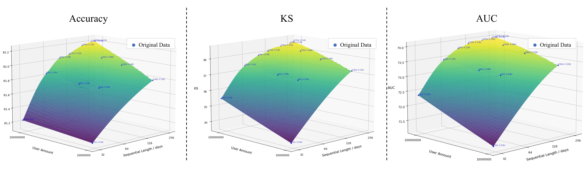
Figure 4 的三个三维曲面分别展示 Accuracy、KS 和 AUC，横纵两个扩展轴是用户数与时间长度。三个指标在小数据区域斜率较大，过了约 3000 万用户与 60 天后曲面明显变平，说明趋势并非某一个阈值指标的偶然。但图中是有限网格点的插值曲面，而不是连续地扫遍所有 $N,D$ 组合；“饱和”也需要结合作者选定的差异容忍度来判定。实际部署时，应把它视为寻找“本平台当前边际收益区间”的方法，而不是根据 0.03B/60 天直接裁剪所有业务数据。
更强的诊断来自模型容量轴。当 $N=0.1B,D=180$ 天已处在原始数据饱和区域时，模型从 0.05B 扩大到 0.2B 能改善下游，再到 0.4B 则基本不变；同时预训练 loss 仍会降低。这意味着更大模型能拟合重复的细节，但没有获得新的、可迁移到下游的区分信号。论文因此把瓶颈从“编码器不够大”改写为“每个有效输入单位承载的下游相关信息不够密”。
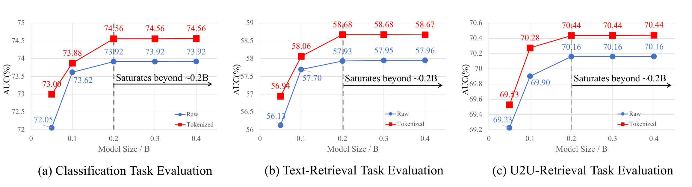
Figure 5 对分类、文本检索和 U2U 检索分别画出模型参数与 AUC。原始与分词两条曲线都在约 0.2B 后趋平，但分词数据整体位于更高平台：例如分类 AUC 从原始序列的 73.92% 平台移到约 74.56%，文本检索从约 57.95% 移到 58.68%。这幅图有两层含义：分词提高了可达的信息密度前沿，但它并没有消除模型容量的边际递减。因而工程上不应解读为“分词后可以无限加大模型”，而应解读为“先改变输入密度，再在新的饱和点前选择足够的模型”。
论文把“行为稠密化”定义为：把长而重复的原始历史变换成紧凑表示，尽量保留下游任务需要的区分，同时压制例行、可预测或弱相关事件。它不等于追求最高压缩比：丢掉太多细节会伤害效用，保留太多代码又回到冗余。这个权衡正是“最小充分容量”的出发点。
2. 方法
2.1 从行为—文本对齐到 RQ-VAE 稠密化
原始与分词两种设置共用同一个行为—文本对比目标，这是归因设计的核心。它把监督信号、用户编码器和下游协议固定住，尽量使性能差异只由原始行为或离散码输入引起。对 batch 中用户 $i$ 的过去行为嵌入 $e_i^b$ 和未来行为文本嵌入 $e_i^q$，预训练损失为：
符号解释：$B$ 是 batch size，$\operatorname{sim}$ 是余弦相似度，$\tau$ 是可学习温度；同用户的过去—未来配对为正例，其余 batch 文本为负例。分词组不换下游编码器也不换对比目标，只把编码器的输入从原始文本行为改为离散行为 token，因此结果差异更能指向输入表示。
对用户 $n$ 的连续行为序列 $X_n=(x_{n,1},\ldots,x_{n,L_n})$，局部聚合先生成固定预算的 $Z_n=(z_{n,1},\ldots,z_{n,H})$，其中 $H\ll L_n$。对每个 $z_{n,h}$，RQ-VAE 从第一个 codebook 开始逐层量化残差：
符号解释：$M$ 是残差量化深度，$K_m$ 是第 $m$ 层 codebook 大小，$c_k^{(m)}$ 是码字，$r^{(m)}$ 是当前尚未解释的残差，$t_{n,h}$ 是由多层索引构成的语义 ID。前层更像常见消费类别或周期习惯的粗粒度码，后层继续拟合商户偏好、额度变化等残余细节；多层组合在紧凑预算下比单大 codebook 更容易复用共享结构。
符号解释：$\mathcal L_{\mathrm{rec}}$ 约束完整重构，$\operatorname{sg}$ 是 stop-gradient，$\hat r^{(m)}$ 是第 $m$ 层选中的量化向量，$\beta$ 控制 commitment 项。训练边界是：RQ-VAE 先用重构目标学习 codebook，之后被冻结；用户编码器只读取离散 token，仍用前述 InfoNCE 学与未来行为文本对齐。
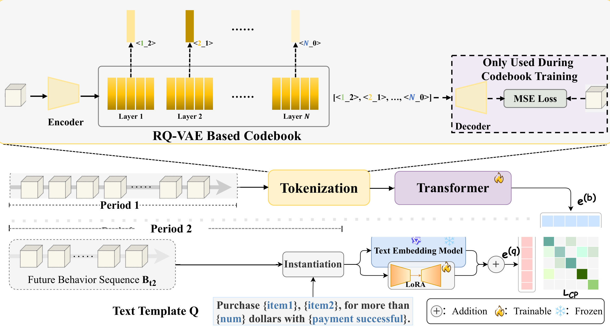
Figure 6 上半部是只在 tokenizer 训练时使用的分支：Encoder 得到连续潜变量，多层 RQ-VAE codebook 逐步抵消残差，Decoder 用 MSE/重构信号还原表示。下半部是用户表示学习：过去行为先被 Tokenization 压成 ID 序列，再进 Transformer；未来行为经文本模板和冻结嵌入模型生成监督向量，两路以 $\mathcal L_{\mathrm{CP}}$ 对齐。图中“Decoder only used during codebook training”很关键：法则和下游提升不是靠线上附加一个重型解码器，而是靠离线学到的更高密度输入。但 tokenizer 本身的训练、版本刷新和全量行为转码成本仍然存在，论文未把这些成本完整计入线上收益表。
2.2 最小充分容量：从 Pareto 目标到可操作搜索
论文不把稠密化定义为“token 越少越好”，而是在给定数据规模 $s$ 时寻找下游效用 $U$ 与表示成本 $C$ 的 Pareto 最优点。压缩过度会丢掉能区分用户的信号，压缩不足则只是把冗余换了一种存储形式，所以目标必须同时看质量与成本，并允许不同部署对两者设不同交换率：
符号解释：$\widehat C_{\mathrm{raw}}(s)$ 是原始序列达到同等效用所需的有效成本，$C^*(s)$ 是稠密表示成本，$\rho^*$ 表示密度改善；$\lambda$ 是部署系统对成本的敏感度。$\lambda$ 越大越偏向廉价表示，越小越容许用更多容量换效用。这个定义把业务的成本权重显式化，但论文并没有给出所有部署环境可共用的 $\lambda$。
对 RQ-VAE 配置 $\kappa=(K,M,d,H)$，作者用下式近似离散码空间与码嵌入成本。这一口径同时惩罚更长序列、更深残差层、更大码本与更高维嵌入，但它是容量代理量而不是端到端时延模型：
符号解释：$H$ 是输出 token 数，$M$ 是残差层数，$K$ 是 codebook 大小，$d$ 是码嵌入维度，$\eta$ 把连续嵌入存储/计算折算到同一成本口径。因为下游训练有随机噪声，直接在连续 $\lambda$ 上找最优不稳定，论文改用“接近最佳效用的最小配置”：
符号解释：$\mathcal K$ 是实际扫描的离散 tokenizer 配置集，$q_\kappa$ 是指定配置的分词器，$U^*$ 是这个搜索网格中的最高下游效用，$\epsilon$ 是容许的接近最佳差距。所以 $C^*$ 不是一个与实验无关的真值，它依赖配置网格、指标汇总方式、随机波动和 $\epsilon$。“最小充分”是约束搜索的可操作定义，不是凭法则曲线直接算出的绝对最优。
2.3 对数—对数轨迹与数据唯一性
为了把离散 Pareto 点压缩成选型规则，论文假设饱和区域内的效用前沿可局部近似为一条随容量递减的反幂曲线。这个局部形状是后面 log-log 线性的关键条件，它不是从任意效用函数都能推出的恒等式：
符号解释：$U_\infty(s)$ 是在规模 $s$ 下的渐近效用，$a(s)$ 是有限容量距离前沿的缺口，$b$ 控制边际收益衰减曲率。把它代入 $U-\lambda C$ 并对 $C$ 求一阶条件，可得 $C^*=(a(s)b/\lambda)^{1/(b+1)}$。再假设缺口随多个规模维度以幂函数增长，便得到运维形式：
符号解释：$s_i$ 可以是用户数、时间窗口、模态数或场景多样性，$s_{i,0}$ 是参考尺度，$\beta$ 是截距，$\alpha_i$ 是对应维度的容量弹性，$\alpha_\lambda$ 反映成本偏好。当部署 $\lambda$ 固定，其项可并入截距；本文实验将 $s$ 实例化为用户数 $N$ 与时间窗口 $D$。这段推导说明了幂律形状从哪些假设来，也同时限定了结论：如果效用前沿不符合该局部形状，或 $a(s)$ 不按幂函数变化，对数—对数线性就不必然成立。
作者进一步将斜率写成 $\alpha_i=f_i(U_d,E_\phi)$，把它视为数据内在多样性与 tokenizer 码空间组织方式的联合结果。为了给第一部分一个可测代理，论文用 LLM 文本嵌入的平均 $k$ 近邻余弦距离衡量数据源内唯一性：
符号解释：$M$ 此处是抽样行为嵌入的数量，$k\mathrm{NN}(i)$ 是样本 $i$ 的 $k$ 个近邻，$d(i,j)$ 是余弦距离，$E_\phi$ 概括 tokenizer 如何组织代码空间及其冗余。$U_d$ 越大表示同源行为语义更分散，理论上需要更大容量避免碰撞。论文观察到斜率比约为 $1:1.15:0.92$，而 $U_d$ 比约为 $1:1.07:0.96$，并提出 $\alpha_i\propto U_d^2$ 的近似关系。这仍是三个数据源上的经验对齐，论文没有证明平方形式在任意嵌入器、任意模态或分布下不变。
2.4 ALGN：把全局容量原则下放到单样本门控
全局 $C^*(s)$ 只告诉系统在某个数据规模下应准备多大最大容量，但不同用户时段的信息量不均匀。例行缴费或固定通勤可能一两层码已足够，突发、多样或模糊的消费片段需要更多残差层。ALGN 在每个量化深度 $l$ 评估继续一层的边际效用。它先定义剩余重建量和累积路径不确定性：
符号解释：$r_{l-1}$ 是进入第 $l$ 层前的残差，$e_{l,m}$ 是本层选中的码嵌入，$R_l$ 大表示尚有较多信息未被重建；$p(m_k\mid m_{
符号解释：$g_l$ 是继续概率，$\sigma$ 是 sigmoid，$\operatorname{sp}$ 是 Softplus，它把三个权重约束为正；$c_l$ 是启用更深层的边际代价，$b$ 是偏置，$\theta$ 是停止阈值。因此残差和不确定性增大会单调提高继续倾向，层成本增大会降低继续倾向；首个 $g_l\le\theta$ 的层就是激活长度，若一直不满足则用到 $L_{\max}$。
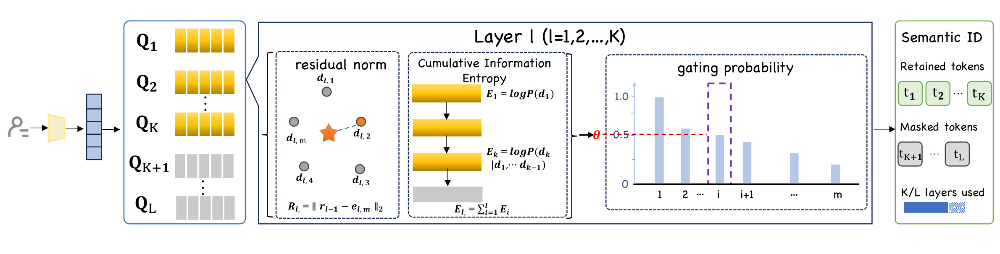
Figure 10 将上述规则展开在第 $l$ 个 RQ 层：左侧是从 $Q_1$ 到 $Q_K$ 的候选码层，中间同时计算残差范数与累积信息熵，然后由门控曲线和阈值 $\theta$ 决定继续还是遮掉后续码。右侧的 Semantic ID 因此不再等长：信息密集片段保留更多层，可预测片段提前停止。图中的概率柱和遮码只是门控机制示意，不能被误读为某个具体用户的可解释业务比例。而且 $R_l,E_l$ 是重构与赋码代理量，它们与下游贡献存在经验关联，不是直接监督的真实边际收益。
为避免所有样本都激活最大深度，ALGN 在激活层重构损失之外，用长度分布而非单样本长度做正则。这样不强迫每个用户片段都付出同样的压缩代价，而是只约束整个 batch 的码长组成，保留少数复杂片段用长码的空间：
符号解释：$\mathcal L_{\mathrm{rec}}^{\mathrm{act}}$ 只用已激活残差层重构，$P_{\mathrm{len}}$ 是模型学到的长度分布，$Q$ 是先验分布，$\lambda_{\mathrm{KL}}$ 权衡两项，$\gamma$ 控制几何分布衰减速度；实验中取 $\gamma=0.3$。分布约束允许少数高信息样本使用长码，不像每样本长度惩罚那样平均压短。但几何先验本身编码了长尾行为假设，更换业务分布时需要重新检验。
3. 实验结果
3.1 可比协议与证据层级
论文的主任务包含线性探测分类、零样本文本人群检索和少样本 U2U 检索。分类汇报 AUC、KS、Accuracy，两种检索汇报 AUC、Precision、Recall，正文的扩展曲线主要展示跨场景平均 AUC。原始与分词组使用同一 Transformer 用户编码器、同一对比目标与同一下游协议，使“输入稠密化”有相对干净的对照。但证据仍有层级：PayBill 上的十亿级训练与三任务是主证据；SPM 和 MiniProgram 主要用于法则斜率与配置迁移；公共基准上的复现尚在进行，不能把平台内平均指标当成外部通用证明。
为表达分词的尺度依赖性，作者定义 $\Delta(s)=P_{\mathrm{tok}}(s)-P_{\mathrm{raw}}(s)$。符号解释：$s$ 可以表示时间窗口或用户量，$P_{\mathrm{tok}}$ 和 $P_{\mathrm{raw}}$ 是同口径下的下游表现。$\Delta$ 并非在小规模下必然为正；当原始序列的冗余还不严重时，量化损失可能抵消压缩好处。因此实验的重点是“什么时候交叉”，而不是只比一个最大数据点。
3.2 分词在饱和区的收益与计算前沿
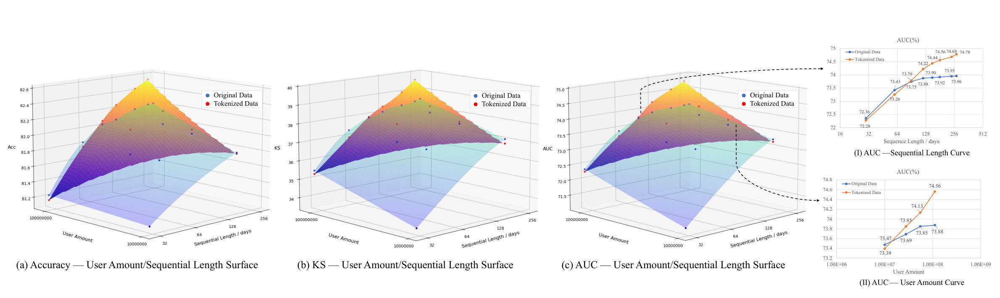
Figure 7 同时给出用户量—时间曲面与两条截面曲线。在短序列和小用户量时，原始与分词差距很小，有些点原始甚至不差；时间窗口约过 64 天后，分词曲线超过原始曲线并逐渐拉大差距；用户量轴上的交叉约在 $1.2\times10^7$ 用户附近。这与 $\Delta(s)$ 的定义一致：分词不是凭空制造新信息，而是在原始数据的边际新信息已很少时，通过压缩重复让编码器更专注任务相关差异。曲线是支付场景内的经验拐点，不能将 64 天或 1200 万用户作为其他平台的固定分流线。更合理的使用方式是在本地数据上先定位交叉区间，并在交叉前后同时比较质量、token 数和时延，确认收益确实来自冗余压缩，而不是某个数据切分偶然利好分词组。
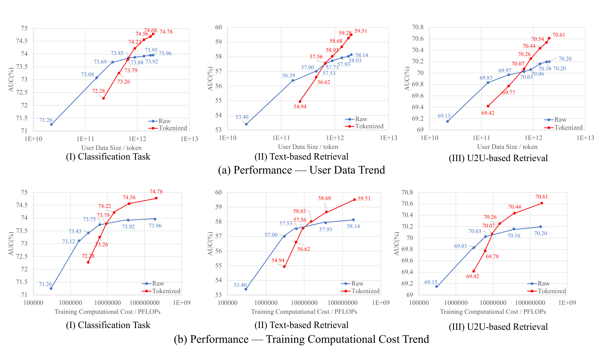
Figure 8 上排把横轴换成真正的用户数据 token 量，下排换成训练 PFLOPs，每排均包含分类、文本检索和 U2U 检索。原始曲线在大数据/高计算区域弯折趋平，分词曲线在更大范围内保持上升，三个任务方向一致。例如分类曲线的高规模端，原始数据约停在 73.96% AUC，分词到 74.78%；文本检索约从 58.14% 到 59.51%，U2U 约从 70.20% 到 70.61%。图支持“同数据/计算区间下的更好前沿”，但 PDF 没有给出 tokenizer 预训练、全量离线转码、存储和版本迁移的端到端成本，所以不能直接将 PFLOPs 曲线等同于总拥有成本。图中每条曲线也没有置信区间或多随机种子误差，对高规模端 0.4 到 1 个 AUC 点之间的差距，应继续用多次训练和线上目标检验稳定性。
3.3 Densing Law 的多源、多分词器拟合
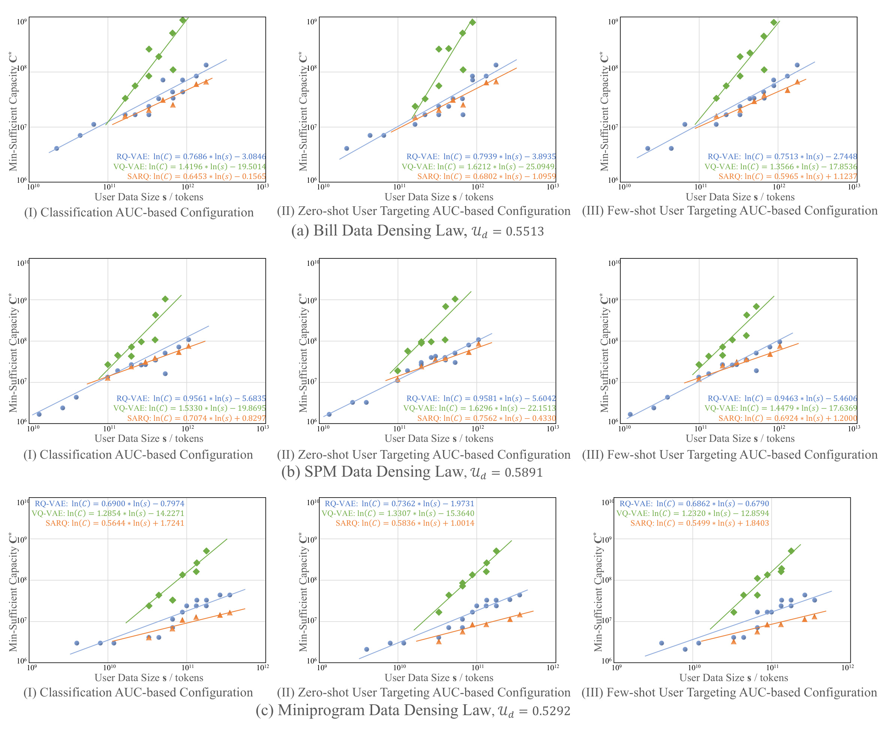
Figure 9 是论文最需要谨慎解读的证据。三行依次是 PayBill、SPM 与 MiniProgram，三列依次是分类、零样本人群检索与少样本 U2U 检索，每个子图同时拟合 RQ-VAE、VQ-VAE 与 SARQ。同一数据源和 tokenizer 下，三任务斜率相近；例如 PayBill 的 RQ-VAE 斜率约为 0.7686、0.7939、0.7513，而 VQ-VAE 约为 1.4196、1.6212、1.3566，SARQ 约为 0.6453、0.6802、0.5965。这显示存储复用更差的 VQ-VAE 需求更快增长的名义容量，组合式 RQ-VAE 与更自适应的 SARQ 斜率较低。
但斜率并不跨 tokenizer 或跨数据源相同：SPM 的 RQ-VAE 三个斜率约 0.9561、0.9581、0.9463，MiniProgram 约 0.6900、0.7362、0.6862。这正是不应把论文命名的 “Law” 误解为普适定理的原因：作者证实的是“在所测试分布、配置网格、下游容忍度和分词表达下，最小充分容量在 log-log 坐标上近似线性”，不是证明了任意平台的固定指数。新数据源需先小规模扫描、重新拟合截距与斜率，再用法则做计划，不能照抄 PayBill 公式。
3.4 ALGN 的效率—质量比较和消融
ALGN 对比在 180 天、0.1B 用户的 PayBill 设置上进行，长度先验取几何分布 $\gamma=0.3$。作者因为三类任务趋势相似，在该表中只报告分类指标和 SID capacity usage。容量以固定长 RQ-VAE 的 100% 为基准，这是相对表示空间口径，不是线上 CPU/GPU 占用率。
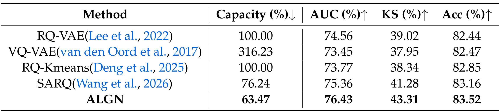
Table 3 显示，RQ-VAE 在 100% 容量下的 AUC/KS/Accuracy 为 74.56/39.02/82.44；VQ-VAE 使用 316.23% 容量，却没有改善质量，反映名义码空间并不等于有效表达；SARQ 为 76.24% 容量和 75.36/41.28/83.16；ALGN 达到 63.47% 容量与 76.43/43.31/83.52。相对 SARQ，三个指标是 +1.07、+2.03、+0.36 个百分点。需注意 PDF 正文写“saving 13.23% capacity”，但表中 76.24 到 63.47 的绝对差是 12.77 个百分点，相对降幅约 16.75%，与 13.23% 都不直接一致。因此本笔记保留表格原值，不把该文本百分比当成精确结论。
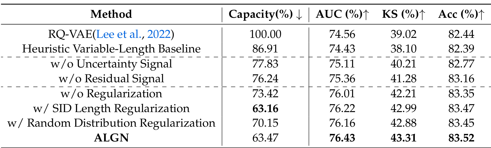
Table 4 把门控证据拆开。启发式变长基线用 86.91% 容量、AUC 74.43；去掉不确定性后为 77.83%/75.11，去掉残差信号后为 76.24%/75.36，两种单信号都弱于联合门控。去掉长度分布正则时容量回到 73.42% 且指标下降，说明门不会自然学到紧凑长度。直接 SID 长度正则得到更低的 63.16% 容量，但三个指标比 ALGN 分别低 0.21/0.32/0.05 个百分点，说明几何分布先验在保持少数长码上有轻微好处。正文又将 70.15 到 63.47 写为“降低 6.68%”，实际直接可读口径是 6.68 个百分点；复现时应统一区分百分点与相对百分比。消融尚缺少不同 $\theta$、最大残差深度和 $\gamma$ 的联合网格，因而无法从该表分离“门控结构”与“本轮超参选择”各自贡献多少。
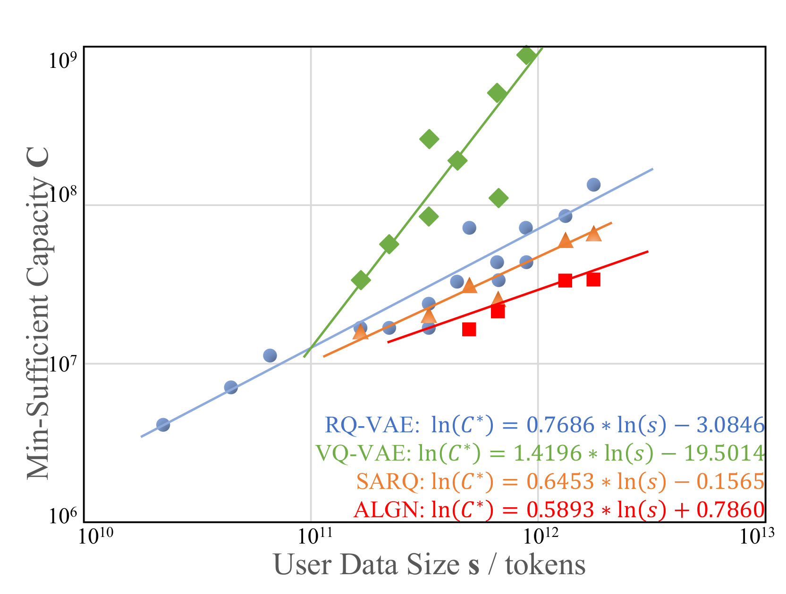
Figure 11 在 PayBill 分类任务上将 ALGN 加入 RQ-VAE、VQ-VAE 和 SARQ 的对数拟合。图中斜率依次约 0.7686、1.4196、0.6453 和 0.5893；ALGN 最低，意味着在该搜索口径下，数据 token 扩大时最小容量增长更慢。作者把它归因于自适应分配减少了表示空间冗余 $E_\phi$，这一机制解释与 Table 3/4 方向一致，但图本身仍是相关性证据，没有通过直接操纵 $E_\phi$ 建立因果。也不能将 0.5893 当作 ALGN 在任意数据源上的固定指数，它需随配置网格与业务分布重新拟合。此外，较低斜率只说明在这段观测区间容量需求增长较慢，不说明 ALGN 的绝对前处理成本、码本刷新频率或在更大规模处仍保持同一斜率。
3.5 优化收敛与跨源迁移
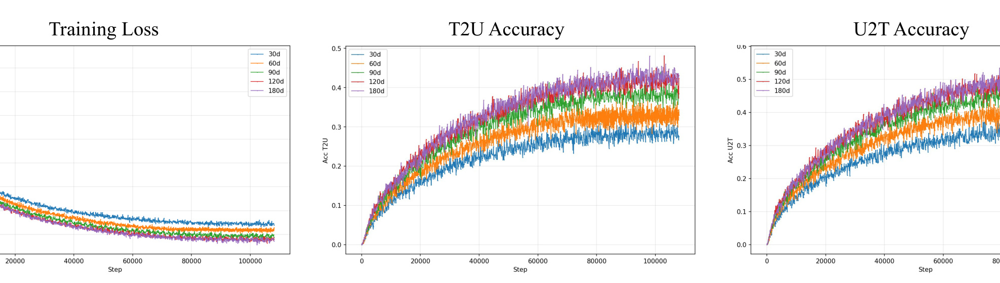
Figure 12 展示 30、60、90、120、180 天序列在 10 万个训练 step 内的对比损失、T2U 与 U2T accuracy。随历史变长，最终 loss 约从 8.28 降到 8.15，T2U 约从 0.29 升到 0.42，U2T 约从 0.35 升到 0.50；但 90 天以上的损失曲线已很接近。这些训练指标说明更长历史确实提供了一些对齐信号，但它不能反驳下游饱和：模型可以更准确地匹配未来行为文本，却不一定学到更可区分的通用用户特征。这就是前文“loss-quality dissociation”的优化侧补充，也提醒线上预训练不能只监控 loss 和 in-batch retrieval accuracy。对实际监控面板，应将预训练目标与冻结编码器的下游线性探测并排，并对每增加一段历史所带来的计算增量与下游收益做差分。
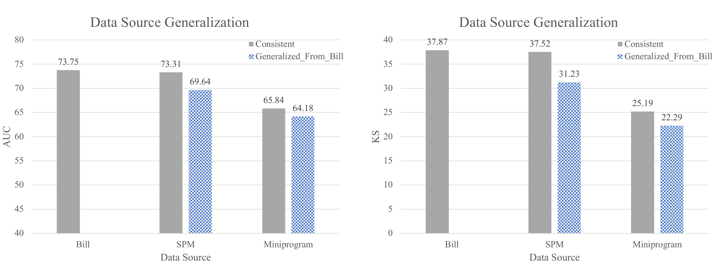
Figure 13 比较每个数据源自己校准的配置，与直接使用 Bill 压缩配置的结果。SPM 的 AUC 从 73.31 变为 69.64，保留约 95.0%；MiniProgram 从 65.84 变为 64.18，保留约 97.5%。KS 的降幅更大：SPM 从 37.52 到 31.23，保留约 83.2%；MiniProgram 从 25.19 到 22.29，保留约 88.5%。因此“跨源可迁移”应当分指标表述：AUC 排序能力保留较多，KS 所反映的分布分离能力受分布偏移影响更明显。而且 Bill、SPM、MiniProgram 均来自同一超级应用生态，这幅图还不是跨平台、跨国家或跨模态的外部验证。如果要用 Bill 配置作冷启值，安全做法是在目标源上先开一个小流量配置扫描，分别为 AUC、KS 和业务约束设定退化阈值，而不是因为 AUC 保留率较高就直接全量迁移。
4. 总结
这篇论文的主要价值是把用户建模中“多就是好”的默认假设拆成三个可测问题：原始数据什么时候饱和，分词后多大容量才算充分，容量是否应对每个行为片段平均分配。它用 RQ-VAE 展示信息密度可以推迟原始扩展墙，用 $\epsilon$-近似最佳的最小成本点生成容量轨迹，再用 ALGN 把这一原则实现为样本级可变码长。对推荐系统而言，可迁移的不是某个固定斜率，而是一套流程：先在用户数、历史窗口和模型尺寸上找边际收益，再用小规模 tokenizer 配置扫描校准 Pareto 点，最后才把稳定关系用于容量规划。
对大模型与 Agent 的启发也需保守。用户行为 token 可作为个性化记忆的紧凑中间层，将重复的长期历史压成更可控的语义 ID；ALGN 的“残差+不确定性-成本”门控也可启发可变长记忆或 RAG 摘要预算。但本文没有评测自然语言交互的事实保真、时间一致性或安全性，也没有证明离散行为码能直接被 LLM 解读。因而这里的迁移只是设计启发，不是论文已验证结论。
局限至少有六点。第一，主证据来自支付宝生态与 PayBill 行为，视频消费、内容反馈、商品交互等模态尚未验证。第二，数据是非公开工业数据，候选配置网格、$\epsilon$、重复训练方差和硬件细节不足以支持外部完整复现。第三，log-log 线性是经验拟合，其推导依赖局部递减前沿与幂式缺口假设，不是无条件定理。第四，$U_d$ 依赖选定的文本嵌入模型与近邻口径，$\alpha\propto U_d^2$ 只有有限数据源证据。第五，ALGN 的门控代理重构与赋码难度，它不直接看下游边际效用，新任务可能会看重被压缩掉的细节。第六，表格正文存在百分比/百分点的口径不一致，且未报告端到端转码、存储、刷新和线上时延成本。
后续复现可按四步走。一是先公开一个小型多源数据子集与完整配置网格，对不同 $\epsilon$ 、随机种子和下游任务重新定义 $C^*$。二是用滑动时间窗检查拟合参数的稳定性，尤其观察大促、节假、新业务冷启时是否偏离线性。三是同时报告下游指标、实际 token 数、解析/训练 PFLOPs、缓存和线上延迟，将 tokenizer 更新也纳入成本。四是对 ALGN 门控做任务敏感性与公平性切片，检查活跃用户、低频用户和稀有行为是否被系统性分配不同码长。只有这些校验成立，稠密化法则才能从单平台经验升级为可靠的容量规划工具。